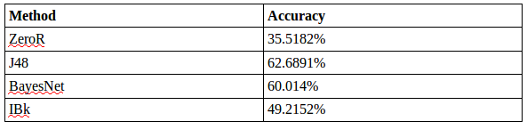

-
Motivation
UFC has been gaining more and more popularity. I attempted to determine the method of victory in a UFC fight (by knockout, submission, technical knockout, decision, or draw) based on attributes of each bout including age difference, weight difference, height difference, fighting class, the referee, and when the round ended. Being able to predict the outcome of a fight based on the attributes of each fighter could shift the odds against or in favor of different fighters prior to a fight and shift fan votes and expert predictions. This could have implications on the cost of betting for or against certain fighters or cost of betting on how a fight will end. Additionally, knowing what factors affect the outcome could influence how a fighter trains. For example, a certain weight class tends to end by submission, competitors in that class would know that they have to focus on their ground game.Solution
To predict the method of victory, I used datasets from sherdog.com. The first dataset [HYPERLINK] contains data from every UFC fight dating back to November 1993. The second dataset [HYPERLINK] contained data from all the fighters that have ever competed in the UFC. Using a script [HYPERLINK] I wrote using a Python library called openpyxl, I used information from both of these sets to create a refined dataset [HYPERLINK] with the following attributes:
1. Age difference
2. Weight difference
3. Height difference
4. Referee
5. Round the fight ended
6. Weight class
7. Method of victory
To build the next part of my model, I used ZeroR as a baseline for testing and tried J48, BayesNet, and IBk in Weka using 10-fold cross-validation.

-
Training and Testing
I separated the dataset into training and test using Weka's built in RemovePercentage filter. After removing percentage I saved that file as the training set. As seen in the table above, the J48 method ended up performing best on the dataset (62.6891%). The main source of error seemed to stem from the method incorrectly classifying instances where the outcome of fights were TKO/KO/submission, or instances where the fight didn't last for more than two rounds. (See full report for more details)
Results
Based on this visual representation of the decision tree, the most important feature seems to be the amount of rounds that the fight lasts for, which makes sense since fights are either up to 3 or 5 rounds long, so in the tree we can see that if the round lasts longer than 2 rounds, the fight is very likely to end up going to the judge's decision. The second most important feature seemed to be the referees of each bout. This is a misleading since different referees worked during different eras of UFC. For example, earlier UFC fights in the 90s were a lot less regulated so the referees during that time period had a tendency to ref fights that ended in KOs, TKOs, and submissions, whereas more fights today tend to end up going to a decision. The next most important feature was weight class – heavier weight class fights have a tendency to end in KOs and TKOs more than lighter weight class fights. While lighter weight classes tend to end in submission.